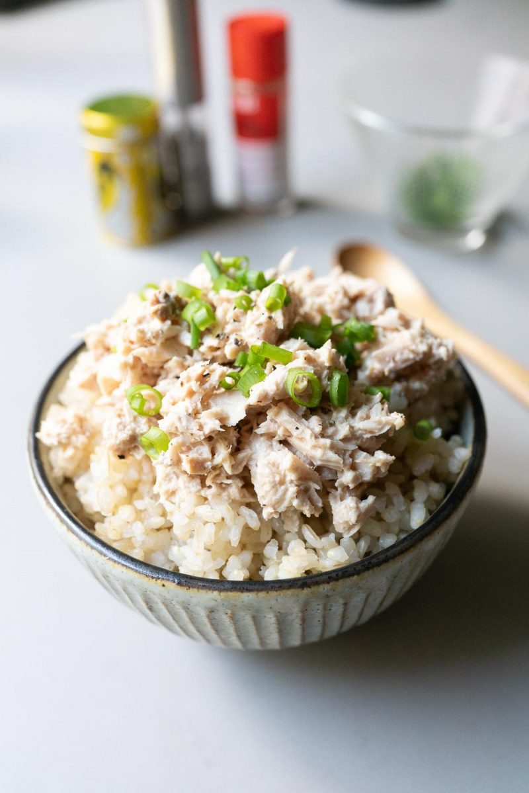

Catboy Special

Description
Catboy special is a bowl of tuna, rice and scallions blended together with a splash of soy sauce.
Ingredients:
- 1 Can of Tuna
- 1 1/2 Cups of Rice
- 1 Scallion
- 1 Dash of Soy Sauce
Steps:
- Thinly slice one scallion into small pieces.
- Drain tuna and empty contents into a medium bowl.
- Add dash of soy sauce and sliced scallions to tuna.
- Finally, add the rice to the contents of the bowl and mix thoroughly.
Homepage